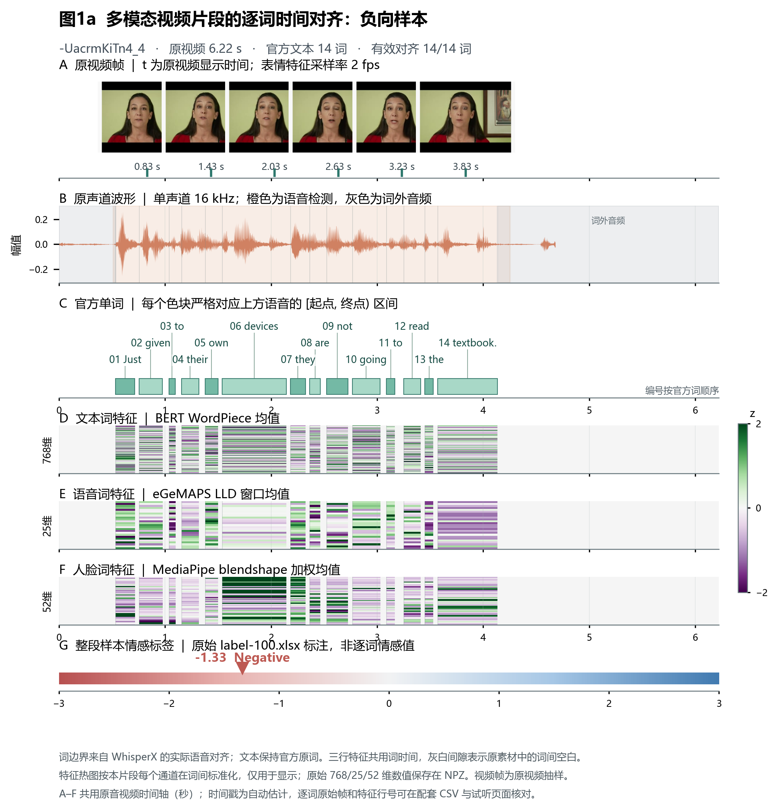
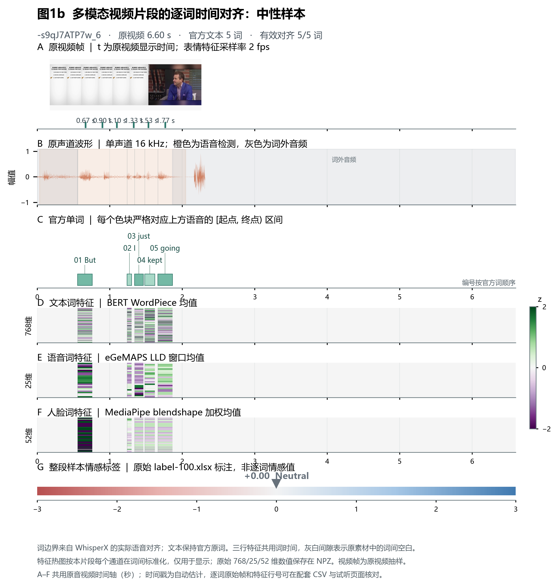
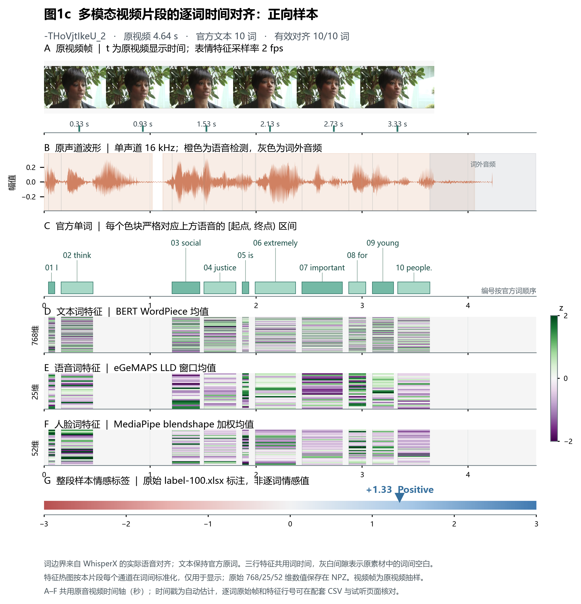

三个典型样本：逐词时间对齐核验
负向、中性、正向各选一条。按钮控制下方原声音频；所有词区间均取自动转写与官方文本核对后的真实发音时间。情感标签是整段标注。
负向 · -UacrmKiTn4_4 · -1.33
官方文本：Just given to their own devices they are not going to read the textbook.
点击单词只播放该词对应的原声音频区间；悬停可看起止时间与自动对齐分数。

图1a：原始视频帧、语音波形、官方词区间、文本/语音/视觉特征及整段标签。
下载逐词源素材与特征行号映射 CSV
中性 · -s9qJ7ATP7w_6 · +0.00
官方文本：But I just kept going
点击单词只播放该词对应的原声音频区间；悬停可看起止时间与自动对齐分数。

图1b：原始视频帧、语音波形、官方词区间、文本/语音/视觉特征及整段标签。
下载逐词源素材与特征行号映射 CSV
正向 · -THoVjtIkeU_2 · +1.33
官方文本：I think social justice is extremely important for young people.
点击单词只播放该词对应的原声音频区间；悬停可看起止时间与自动对齐分数。

图1c：原始视频帧、语音波形、官方词区间、文本/语音/视觉特征及整段标签。
下载逐词源素材与特征行号映射 CSV